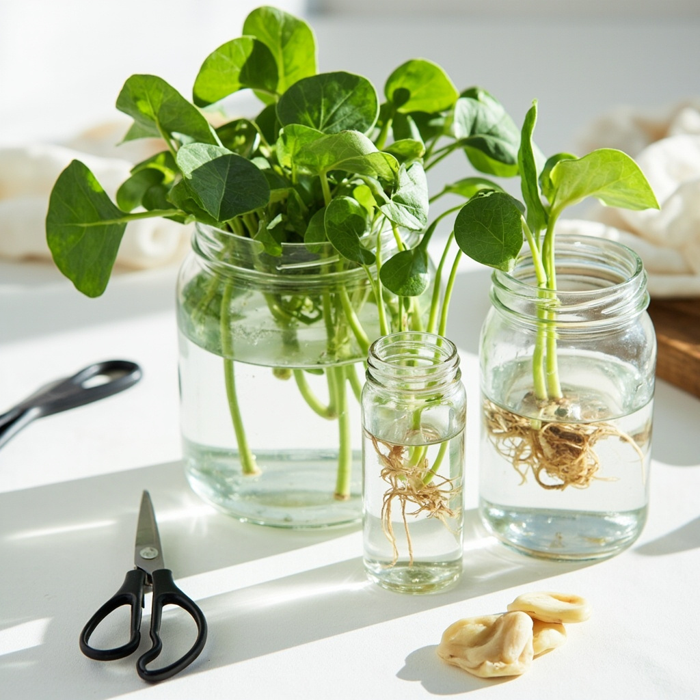

DIY指南
•
2026年6月6日
如何用扦插繁殖黃金葛
黃金葛是初學者擴充收藏的最佳植物。只要一個扦插，你就能免費養出一整株新植物。以下是逐步教學。
PlantGlow
植物護理專家
黃金葛是初學者擴充收藏的最佳植物。只要一個扦插，你就能免費養出一整株新植物。以下是逐步教學。
PlantGlow
植物護理專家

⏰ 所需時間：取扦插5分鐘，2-4週發根
找一條有4-6片葉子的健康藤蔓。你需要一段有節點的莖——節點是葉子附著在莖上的小突起。這是根部生長的地方。
避免發黃、乾脆或有蟲害跡象的莖。
用乾淨的剪刀或修剪刀，在節點下方約0.5公分處剪切。你的扦插應有4-6英寸長，2-4片葉子。
行家提示：斜角45度剪切——這能讓扦插吸收水分的面積更大。
摘掉會浸在水下的葉子。頂部保留2-3片葉子——這些會透過光合作用為扦插提供養分，直到根系發育完成。
用室溫水填滿透明的玻璃罐。放入扦插，讓節點浸入水中但葉子不要碰到水。放在有明亮散射光的地方。
每3-5天換一次水，防止細菌生長並保持氧氣充足。
需要耐心！根部通常在2-4週內出現。你會看到它們從節點長入水中。當根系長到5-7公分長時，你的扦插就可以種入土中了。
使用排水良好的盆土，第一週保持土壤微濕。這能幫助根部適應從水到土壤的轉變。之後按照正常的黃金葛澆水時間表進行。